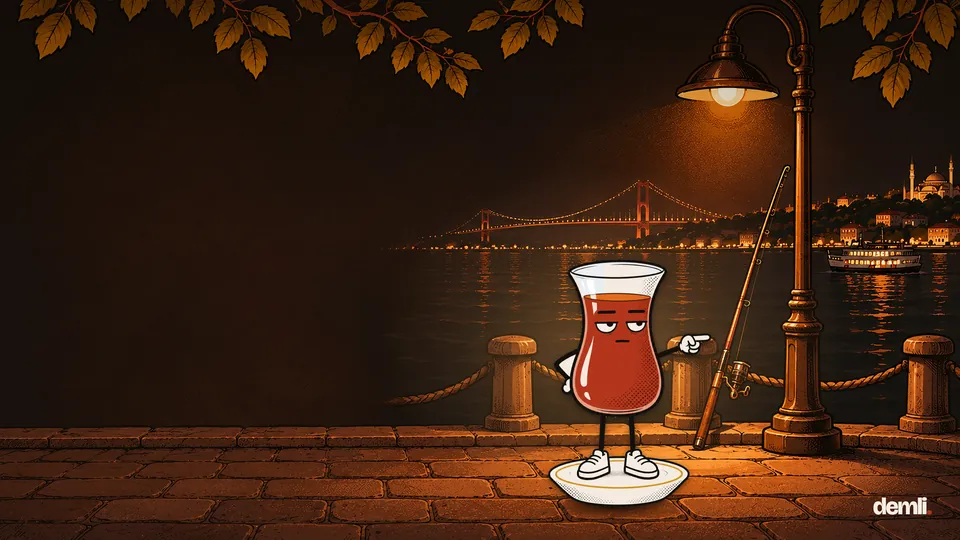
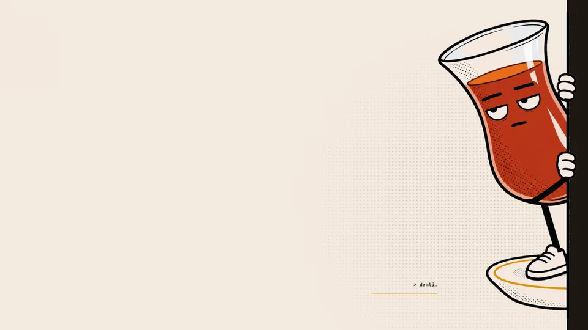
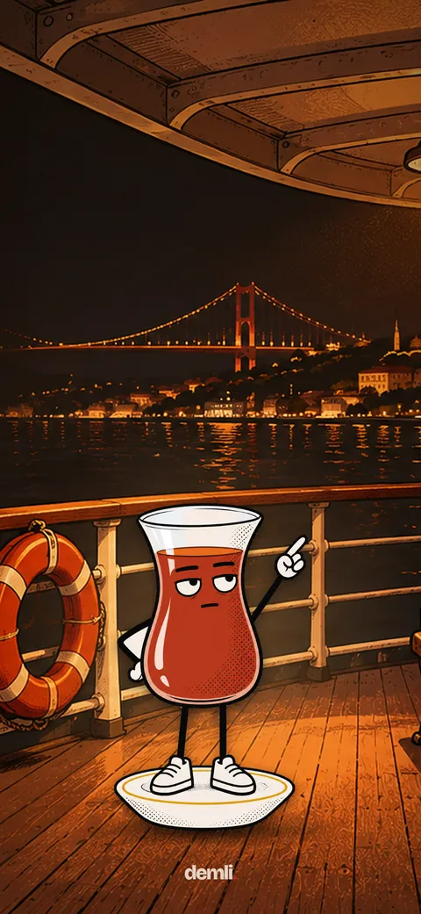
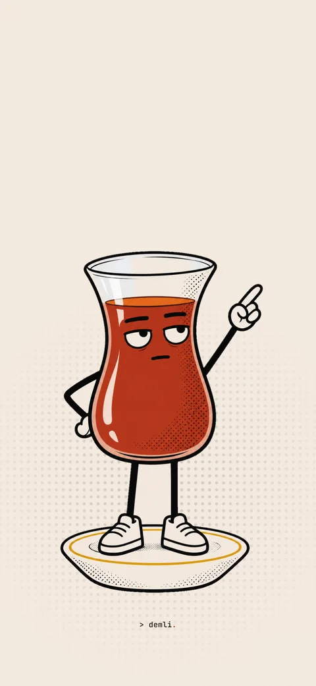

Boğaz kıyısı
Lamba ışığında rıhtımda Demli, arkada köprü ve vapur. Sol taraf masaüstü ikonlarına boş kalır.
> duvar kâğıdı · ücretsiz
Masaüstü için üç boyut, telefon için iki. Ekranına uyanı indir; hepsi PNG ve ücretsiz. İlk sıradakiler gece, gerisi kâğıt.
4K 3840×2160 · QHD 2560×1440 · Full HD 1920×1080

Lamba ışığında rıhtımda Demli, arkada köprü ve vapur. Sol taraf masaüstü ikonlarına boş kalır.

Sağdaki duvarın arkasından sakin sakin bakar. Sol taraf masaüstü ikonlarına boş kalır.
iPhone 1179×2556 · Android 1080×2400 · PNG

Gece vapurunda, lamba ışığında Demli yukarıyı, kilit ekranındaki saati gösterir. Üst kısım saate boş.

Demli parmağıyla kilit ekranındaki saati gösterir. Üst üçte bir saate boş.

ekranına uyan boyutu seç
> windows
> iphone
> android